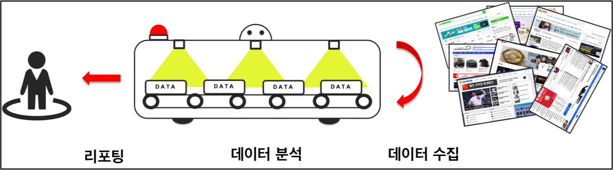

대상이 되는 고객
- 기업 : 기업에 대한 이미지/평판
- 제품 : 제품에 대한 리뷰, 제품 특히 식품 (프랜차이즈) 관련 악의적 리뷰 등 문제가 발생 했을 경우 피드백
- 인물/사건 : 특정 인물(연예인, 정치인 등)이나 발생한 주요 사건에 대한 온라인 상의 여론/이미지
조사하는 주요 온라인 사이트
- 주요 포탈 사이트 : 네이버, 다음 등
- 주요 커뮤니티 사이트 : 디시인사이드, 인벤, MLB파크, 폼뿌 등
- 대상 관련 모든 전문 사이트
리포팅을 위한 프로세스
- 타겟 사이트에서 대상과 관련된 포스트/리뷰 나 댓글을 찾으면서 실시간으로 내용에 대한 분석 (대상에 문제가 되는 내용이 파악되면 실시간으로 해당 고객에게 경고)
- 내용에 대한 데이터 분석을 통해서 긍정/부정 등으로 분리하고 사전 정의에 의하여 분류
- 고객에게 정기적인(일별, 주별, 월별 등) 리포팅
서비스 소개
특정 이슈나 주제에 대해 온라인에서의 반응을 모니터링하여 리포팅 해주는 서비스
이슈에 대한 온라인의 반응은 파급력이 크다는 것을 최 근 ‘두루킹’ 사건을 통해 알 수 있듯이 정치 뿐만 아니라 비즈니스 도 모든 이슈에 대한 온라인의 반응은 기업의 마케팅에 아주 중요한 판단 요소입니다. 이러한 온라인 시장에서의 반응을 추적 조사해서 고객에게 리포팅 하는 서비스가 ORT(Online Review/Risk Tracker) 입니다. 이슈(제품, 인물, 사건, 사고)에 대하여 온라인( 주요 포탈사이트, 전문 사이트 등)에서의 반응을 리포팅을 해주며 한계점 이상의 부정적인 반응이 나타나면 문자메시지등을 통해 실시간으로 고객에게 위험에 대한 경고를 보내서 대응을 할 수 있게 도움을 줍니다.

AI(인공지능)을 통한 실시간 분석으로 반응이 긍정적인가 부정적인가를 판단하여 위험감지가 사전에 정한 한계치를 넘어가면 고객에게 이에대한 경고를 보내줍니다. 정기적 분석으로 데이터에 대한 내용을 분류하여 정기적으로 고객에게 리포팅을 합니다.
